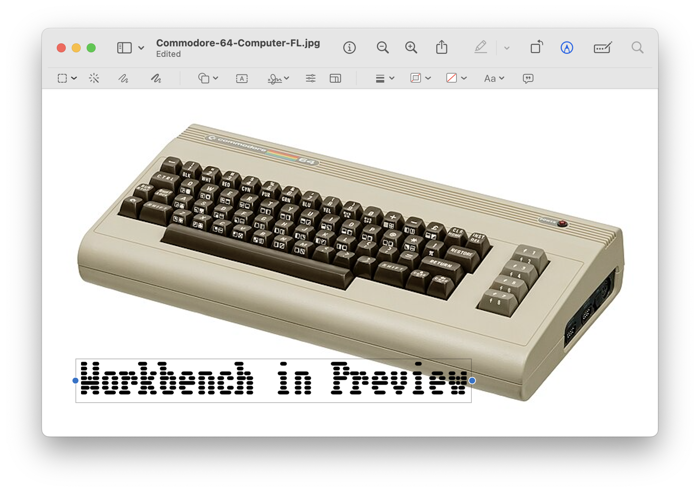

Q: How do I install fonts in Markup?
After following this answer on the Apple forum I got custom fonts to show up in the Preview app on macOS Sonoma.
These steps woked for me to install "Workbench"
- download the Workbench.zip file from google fonts
- set where fonts are installed: Font Book -> Settings -> Installation -> All Users
- drag the extracted Workbench.ttf font onto the Font Book icon (to trigger installation) and install font
- reboot the computer
